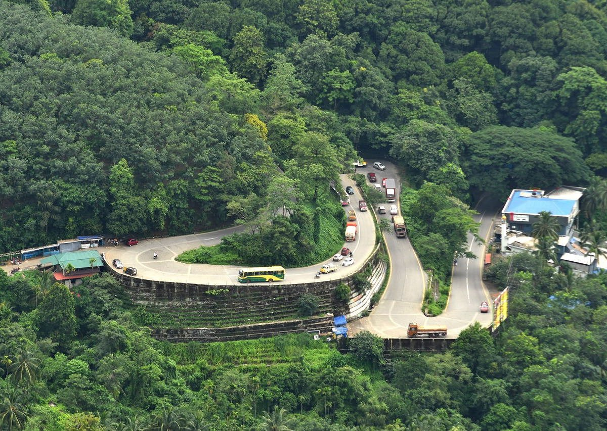
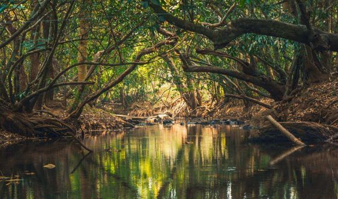

Places

Chembra Peak
Chembra Peak in Wayanad,stands majestically as the highest peak in the region, offering breathtaking views of lush greenery and the heart-shaped Lake.

Lakkidi Viewpoint
Lakkidi Viewpoint in Wayanad offers breathtaking vistas of the mist-covered Western Ghats, making it a haven for nature lovers and photographers alike.

Kuruvadweep
Kuruvadweep, located in Wayanad, Kerala, is a serene river island famous for its lush greenery, diverse flora, and tranquil river streams.

Meenmutty Waterfalls
Meenmutty Waterfalls in Wayanad is a breathtaking cascade nestled amidst lush greenery, offering a mesmerizing sight with its multiple tiers of cascading water.

Wayanad Wildlife Santuary
Wayanad Wildlife Sanctuary, nestled in the scenic hills of Wayanad district in Kerala, India, is renowned for its rich biodiversity and lush greenery.